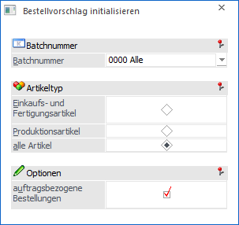
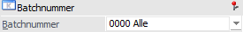
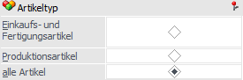
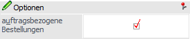

Sollen sämtliche bisher im Bestellvorschlag aufgelaufenen Werte auf null gesetzt werden, so kann dieses über den Menüpunkt…
1 WinLine FAKT
1 Einkauf
1 Bestellvorschlag
1 Bestellvorschlag initialisieren
… erfolgen.
Hinweis
Bei dem Initialisieren des Bestellvorschlags wird ein so genannter "Reservierungslock" abgesetzt, d.h. kein anderer Benutzer kann zu diesem Zeitpunkt die Reservierungen bearbeiten.

Batchnummer

Ø Batchnummer
An dieser Stelle können die Bestellvorschläge, deren Werte auf null gesetzt werden sollen, ausgewählt werden. Folgende Möglichkeiten stehen zur Auswahl:
ü 0000 - Alle
Es werden alle
Bestellvorschläge auf null gesetzt.
ü --- - auftragsbezogen
(Standard)
Es werden nur die auftragsbezogenen Bestellungen initialisiert,
welche im Standard-Stapel vorkommen.
ü AB0x - auftragsbezogen (Stapel
x)
Es werden nur die auftragsbezogenen Bestellungen initialisiert, welche im
Stapel x (1 bis 9) bereitstehen.
ü 0001 - Batch-Nr.1 (Datum: …)
Es
werden nur die Werte der ausgewählten Batchnummer auf null gesetzt.
Hinweis
Wird aus dem Menüpunkt "Bestellvorschlag bearbeiten" mittels Button "Initialisieren" hierher gewechselt, wird der dort zuletzt geladene Batch hier vorbelegt.
Artikeltyp

Ø Artikeltyp
Durch Setzen des Radiobuttons kann an dieser Stelle entschieden werden, was für Artikel aus dem gewählten Batch entfernt werden sollen. Folgende Varianten stehen zur Verfügung:
ü Einkaufs- und Fertigungsartikel (beinhaltet auch die Komponenten)
ü Produktionsartikel
ü alle Artikel
Hinweis
Beim Initialisieren des Bestellvorschlags werden die damit verbundenen Dispositionszeilen vom Typ "Umbuchungsanforderung" ebenfalls gelöscht!
Optionen

Ø auftragsbezogene Bestellungen
Wird die Batchnummer "0000 - Alle" gewählt, so kann mittels Checkbox entschieden werden, ob auch die auftragsbezogenen Bestellungen initialisiert werden sollen.
ü Option "aktiviert
Die
auftragsbezogenen Bestellungen werden ebenfalls initialisiert.
ü Option "deaktiviert"
Die
auftragsbezogenen Bestellungen bleiben erhalten.
Buttons
Ø Ok
Durch Anwahl des Buttons "Ok" bzw. der Taste F5 wird, nach einer zu bestätigenden Sicherheitsabfrage, die Initialisierung gemäß getroffenen Einstellungen gestartet.
Ø Ende
Durch Drücken des Buttons "Ende" bzw. der Taste F5 wird der Menüpunkt geschlossen.
Ø Vorschau
Durch Drücken dieses Buttons öffnet sich ein Vorschaufenster, in dem alle Dispositionszeilen, welche lt. Selektion gelöscht werden würden, angezeigt werden.